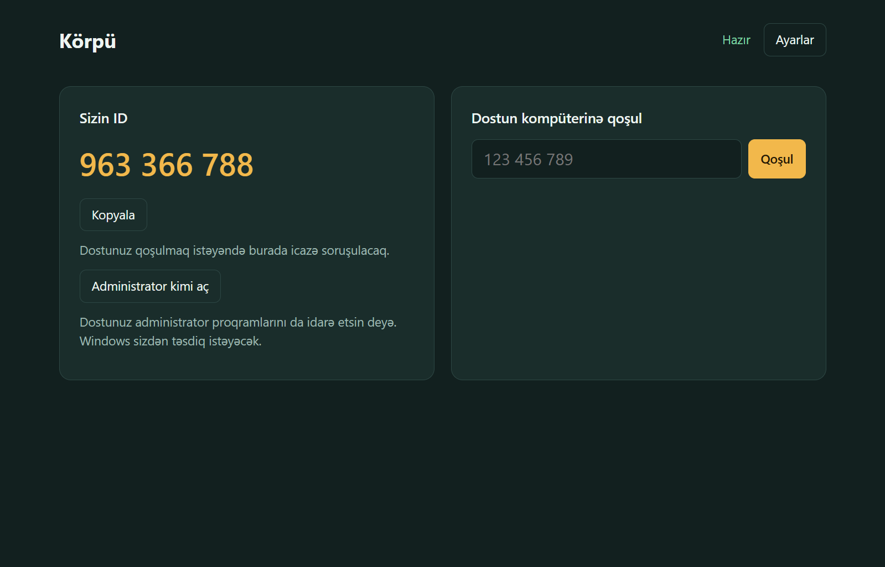
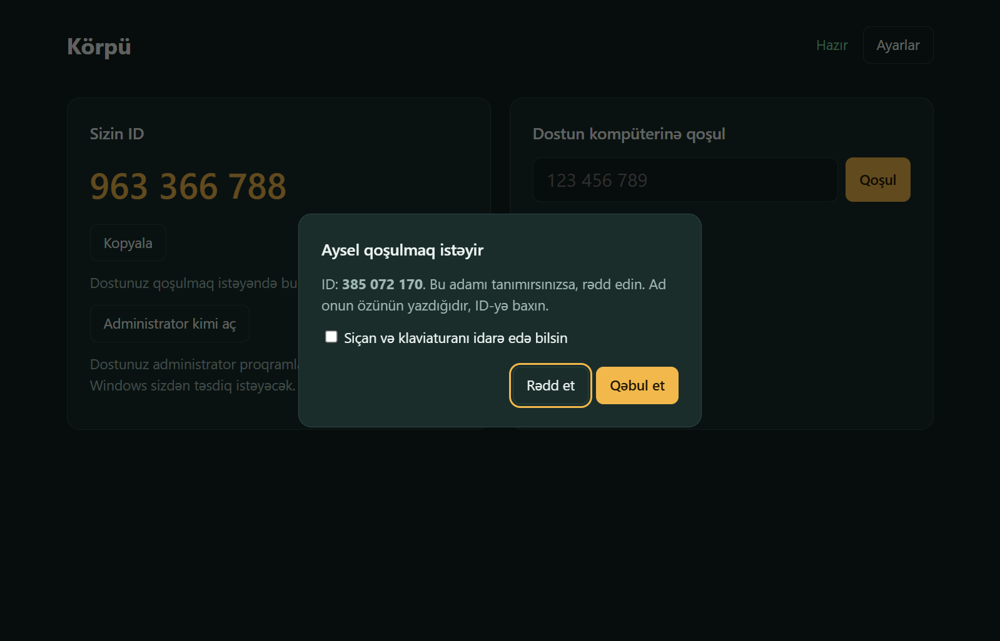
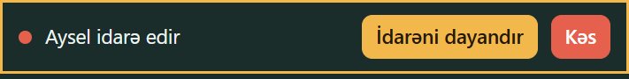

Dostunun kompüterinə körpü sal
ID-ni yaz, dostun qəbul etsin, ekranını gör və icazə versə, idarə et. Vaxt limiti yoxdur.
Windows üçün yüklə0.1.5 · 103 MB · quraşdırmasız
Üç addım
Yüklə və aç
ZIP-i çıxar, Korpu faylını aç. Quraşdırma və qeydiyyat yoxdur.
Açarı bir dəfə yaz
Ayarlar → Server açarı yerinə səni dəvət edən dostun verdiyi açarı yapışdır.
ID ilə qoşul
Dostunun ID-sini (məsələn 1 0507 2005) yaz və Qoşul bas. O, qəbul edəndə ekranı görünür.

Nə edə bilir
- Ekran
- Dostunun ekranını canlı göstərir. Bir neçə monitor varsa, birini seçmək olur.
- İdarə
- Siçan və klaviatura: klik, yazı, qısayollar. Baxış zamanı İdarə istə düyməsi ilə icazə istəmək olur. Windows administrator proqramları üçün ayrıca rejim var.
- Fayl
- Faylı pəncərəyə at, dostun qəbul etsin. Yükləmələr\Korpu qovluğuna düşür.
- Söhbət
- Sessiya zamanı yazışmaq üçün yan panel.
- Birbaşa yol
- Mümkün olanda görüntü iki kompüter arasında birbaşa gedir. Alınmayanda şifrəli şəkildə serverdən ötürülür.
Son söz ekranın sahibinindir


- Ctrl Shift F12 sessiyanı dərhal kəsir.
- Ekran, idarə, söhbət və fayllar WebRTC ilə şifrələnir.
- Gələn hər fayl üçün ayrıca icazə lazımdır.
- Bağlantı üçün Google STUN serverindən də istifadə olunur, o, IP ünvanını görür.
Dələduzlardan qorun. Özünü bank, polis və ya texniki dəstək kimi təqdim edən adamın sorğusunu qəbul etmə. Yalnız şəxsən tanıdığın adama icazə ver.
Suallar
Server açarını haradan alım?
Körpü indi dostlar üçün qapalı serverlə işləyir. Açarı səni dəvət edən adam şəxsi mesajla verir.
Windows niyə xəbərdarlıq edir?
Proqramın hələ rəqəmsal imzası yoxdur. Faylı yalnız bu saytdan yüklə və aşağıdakı SHA-256 kodunu tutuşdur. Kod fərqlidirsə, açma.
Görüntü donur, nə edim?
Ekranını paylaşan tərəfdə kabel və ya 5 GHz Wi-Fi işlət, böyük yükləmələri dayandır. Yuxarıda göstərilən gecikmə (ms) nə qədər azdırsa, o qədər yaxşıdır.
Yeni versiyanı necə alım?
0.1.2-dən başlayaraq Ayarlar → Yenilənmə → Yenilə bas. Proqram yeni versiyanı yükləyib özü yenidən açılır. 0.1.1 işlədirsənsə, bir dəfə buradan yüklə.
Telefonda və Mac-də işləyir?
Hələlik yalnız 64 bit Windows 10 və 11 üçündür.
Tünd Windows təsdiq pəncərəsini idarə etmək olur?
Yox. Həmin pəncərəni kompüterin sahibi özü təsdiqləməlidir.
Bir ekrana neçə nəfər baxa bilər?
Hələlik eyni anda bir nəfər.
Körpünü yüklə
Sınaq versiyasıdır, pulsuzdur. Windows 10/11, 64 bit.
Korpu-Windows.zip103 MB
SHA-256a82123beda81e3d6268d0cec873adcf46162019486315313360b1563e2e61b6d
Yoxlamaq üçün PowerShell-dəGet-FileHash .\Korpu-Windows.zip